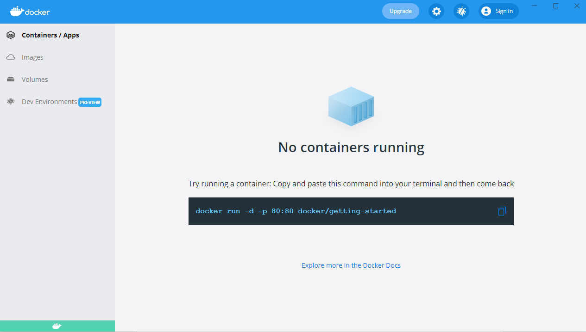

2.0 La plateforme Docker
Docker apporte une facilité de développement, de packaging et de déploiement d’applications quelque soit le langage de programmation. Un développeur peut tester une application sur sa machine en imitant les conditions de l’environnement de production tout en nécessitant une configuration minimale. Si l’application est soumise à un fort stresse, Docker peut orchestrer l’allocation d’autres containers. La scalabilité s’effectue très rapidement car un container peut être lancé en quelques secondes.
Note
Cherchez la définition du terme scalabilité.
Docker permet également d’ augmenter le rythme de mise à jour des logiciels.
2.1 Le modèle client/serveur

Docker utilise un modèle client/serveur. D’une part nous avons le client Docker, un fichier binaire écrit en GO. Et d’autre part nous avons le Docker Daemon (appelé dockerd), écrit aussi en GO, et qui expose une API REST consommée par le client. Le client envoie des commandes au Docker Daemon pour gérer les containers, les images entre autres.
2.1.1 Le serveur : Dockerd
- Processusdockerd
Gestion des images, networks, volumes, cluster, …
Délègue la gestion des containers à containerd.
Expose une API Rest.
Ecoute sur le socket unix
/var/run/docker.sockpar défaut.Peut-être configuré pour écouter sur un socket tcp.
2.1.2 Le client : docker
Installé en même temps que dockerd.
Communique avec le daemon local par défaut via
/var/run/docker.sock.Peut être configuré pour communiquer avec un daemon distant.
2.1.3 Concepts essentiels
Docker facilite la manipulation des containers Linux. Et cache la complexité sous-jacente.
Introduction de la notion d’image : Format d’un package qui contient une application.
Une image est un template qui sert pour la création d’un container.
Pour créer une image on utilise un Dockerfile. Un fichier texte qui contient une liste d’instructions.
La distribution de ces images se fait par l’intermédiaire d’un Registry.
Docker permet de lancer des containers sur une machine unique ou sur un ensemble d’hôtes regroupées en un cluster Swarm.
Voici un schéma qui montre le fonctionnement global des composants de base de Docker.

Quand on installe la plateforme Docker nous avons donc : un client et un serveur (ou daemon) qui tourne constamment et qui est responsable de la gestion des containers et des images.
2.1.4 Docker Hub
Par défaut le daemon Dockerd communique avec le Docker Hub, qui est le Registry officiel de Docker disponible à l’adresse : https://hub.docker.com
Il existe bien entendu beaucoup d’autres Registry que l’on peut utiliser si on le souhaite.

Les images du Docker Hub peuvent être classées en plusieurs catégories.
Les images officielles qui sont validées et que l’on peut utiliser avec confiance.
Les images publiques à utiliser avec précaution.
Les images privées dédiées qu’aux utilisateurs autorisés ( partage d’images au sein d’une entreprise par exemple).
2.1.4 Cluster Swarm
Un Cluster Swarm est un ensemble de Docker Host, c’est-à-dire un ensemble de machines sur lesquel le Docker Démon est installé.

Ses machines vont communiquer entres elles afin d’orchestrer des applications et d’assurer qu’elles fonctionnent de la manière voulue.
2.2 Installation de Docker
Nous allons voir ici comment installer Docker sur votre environnement.
Rendez-vous tout d’abord dans le Docker hub puis sélectionner l’onglet Explore:

Sélectionnez ensuite l’onglet Docker dans le sous menu:

Sur la gauche vous verrez alors un menu vous permettant de sélectionner différents éléments :
plateforme
système d’exploitation
architecture
Comme nous pouvons le constater, Docker peut être installé sur des systèmes divers: machine de développement, l’infrastructure d’un cloud provider, et même des devices de type Raspberry PI.
Installation sur un poste élève du Lycée Paul Claudel -LAON (02)
Normalement, il faudrait télécharger Docker Desktop depuis le site officiel.
Mais pour économiser la bande passante, utilisez le fichier d’installation présent dans le répertoire \\COMMUN\BAUER\Docker\.
Doucle cliquez sur l’installateur et laissez les options d’installation cochées par défaut.
WSL 2 est nécessaire pour faire fonctionner DOCKER.
Si tout se passe bien vous devriez avoir cet écran vous invitant à redémarrer la machine :

** Lancer l’application : Docker Desktop**

Si vous tentez d’exécuter l’application, il est fort probable que vous ayez un message d’erreur vous indiquant :

Pour résoudre ce problème, nous avons besoin d’ajouter les utilisateurs de la machine au groupe docker-users nouvellement créé par l’installation.
Ouvrez une session en administrateur de la machine locale : compte INFO/INFO.
Dans WINDOWS 10, tapez dans le champ de recherche situé en bas à gauche :
« modifier les utilisateurs et les groupes locaux »
Cette fenêtre devrait s’ouvrir :

Double cliquez sur le groupe docker-users.
Et ajoutez un nouvel utilisateur : votre compte issu du domaine sio
Le système vous demandera de saisir l’identifiant et le mot de passe du compte à intégrer à ce groupe.
Redémarrer la machine et reconnectez-vous maintenant à votre compte WINDOWS standard.
Lancez L’application Docker Desktop et validez les conditions d’utilisation. Vous devriez avoir ce message d’erreur :
Fermez alors la fenêtre et rendez-vous sur ce site :
Étapes d’installation manuelle pour les versions antérieures de WSL | Microsoft Docs
Suivez les étapes d’installation :
Vous allez installer WSL2 qui est un sous-système Linux pour WINDOWS.
Cela va permettre d’utiliser des commandes Linux dans un terminal Windows.
Tapez ensuite la commande :
wsl.exe --set-default-version 2
Nous pouvons en profiter pour installer le nouveau Terminal de Windows. Cela va apporter plus de confort durant la pratique de ce cours.
Lien vers la page Terminal Windows
Il faut un compte « Microsoft » .
Redémarrez la machine encore une fois pour que WSL2 soit pris en compte.
Docker devrait maintenant pouvoir démarrer :
Il faut maintenant configurer le client en cliquant sur l’engrenage en haut à droite.
Cochez les options comme sur la capture d’écran :

N’oubliez pas de cliquer sur « Apply & Restart »
Configurez le PROXY

Si vous allez dans l’onglet WSL intégration :

Vous êtes maintenant prêt !
Bienvenue dans le monde de DOCKER.
Passez directement à la partie : Vérification de l’installation
Installation pour Windows 10 ou MacOS
- Si vous êtes sur MacOS ou Windows 10 (Entreprise ou Pro) vous pouvez installer Docker Desktop, un environnement compatible pour chacune de ces plateformes:
Installation pour Linux
Si vous êtes sur Linux, vous pouvez sélectionner la distribution que vous utilisez (Fedora, CentOS, Ubuntu, Debian) et vous obtiendrez alors un lien vers la documentation à suivre pour installer Docker sur la distribution en question.
Pour aller un peu plus vite, vous pouvez également lancer la commande suivante (compatible avec les principales distribution Linux) :
curl -sSL https://get.docker.com | sh
En quelques dizaines de secondes, cela installera la plateforme Docker sur votre distribution. Il sera ensuite nécessaire d’ajouter votre utilisateur dans le groupe docker afin de pouvoir intéragir avec le daemon sans avoir à utiliser sudo (il faudra cependant lancer un nouveau shell afin que ce changement de groupe soit pris en compte.)
sudo usermod -aG docker <UTILISATEUR>
Note
Il est également possible d’installer Docker sur d’autres types d’architecture infrastructure.
Vérification de l’installation
Une fois installé, lancez la commande suivante afin de vérifier que tout est fonctionnel :
docker info